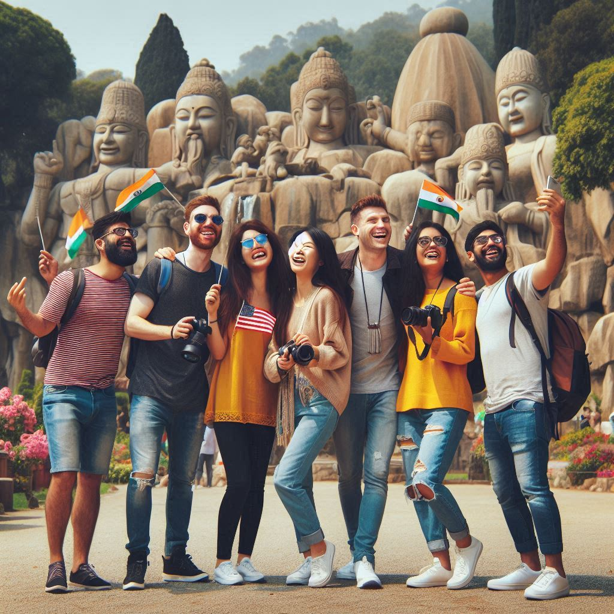
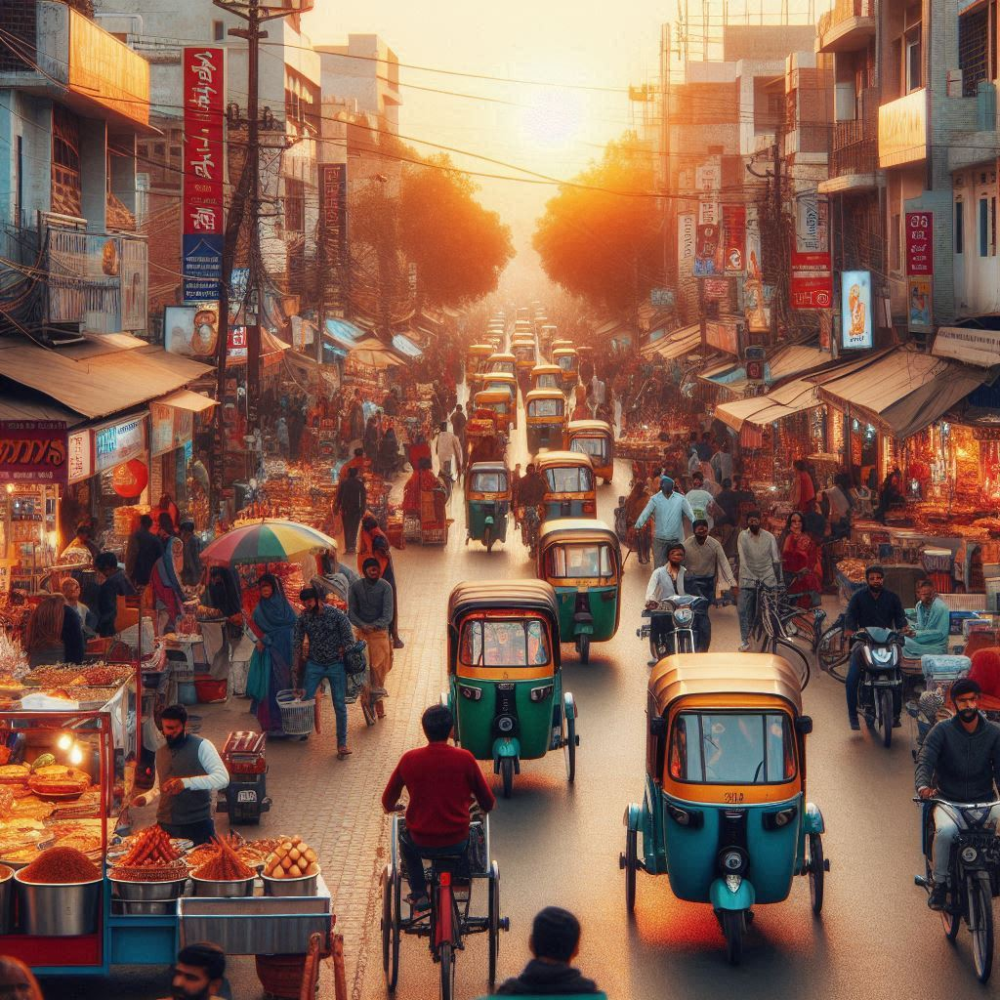

Here’s the structured HTML code for the overview of the tourism landscape in Chandigarh. Each section is
organized with a heading and bullet points to emphasize the key attractions and experiences for
visitors.Here’s an overview of the tourism landscape in Chandigarh:
Chandigarh, known as "The City Beautiful," is a well-planned urban center in northern India that attracts a
diverse range of tourists. With its unique blend of modern architecture, green spaces, and cultural
attractions, the city offers various experiences for visitors. Here’s an overview of the tourism landscape
in Chandigarh:
1. Architectural Marvels
- Le Corbusier’s Planning: Chandigarh is renowned for its modernist architecture, primarily
designed by the famous French architect Le Corbusier. The city's layout, with its sectors
and gardens, showcases his vision of a functional and aesthetic urban environment.
- Capitol Complex: This UNESCO World Heritage site features significant buildings,
including the Punjab and Haryana High Court, Secretariat, and the Legislative
Assembly, all exemplifying modernist architectural principles.
2. Gardens and Parks
- Rock Garden: One of the most famous attractions, the Rock Garden is an artistic
garden created by Nek Chand. It is made entirely from industrial and urban waste,
featuring sculptures, waterfalls, and lush greenery, making it a perfect spot for photography
and leisurely walks.
- Sukhna Lake: An artificial lake that offers boating and scenic views, Sukhna Lake
is a popular recreational area for locals and tourists alike. The promenade around the lake is
ideal for walking, jogging, and enjoying picnics.
- Zakir Hussain Rose Garden: This expansive garden is home to thousands of varieties of
roses and other plants, making it a beautiful destination for nature lovers, especially during
the blooming season.
3. Cultural Attractions
- Punjab University: The campus is known for its striking architecture and is a hub for
academic and cultural activities. The university’s museum showcases the rich cultural heritage
of the region.
- Government Museum and Art Gallery: This museum houses a vast collection of ancient
sculptures, paintings, and artifacts, providing insight into the history and art of Punjab and
the surrounding regions.


4. Festivals and Events
- Chandigarh hosts various cultural festivals and events throughout the year, showcasing local
traditions, music, dance, and cuisine. Bhangra and Gidda performances during festivals
like Lohri and Baisakhi attract many visitors.
5. Shopping and Dining
- Sector 17 Plaza: A bustling shopping area with a mix of local and international brands,
along with numerous eateries offering a taste of Punjabi cuisine and other culinary delights.
- Local Cuisine: Tourists can savor traditional Punjabi dishes at various restaurants,
dhabas, and food stalls across the city. Dishes like butter chicken, sarson da
saag, and lassi are must-try items.
6. Accessibility and Transport
- Chandigarh is well-connected by road, rail, and air. The Chandigarh Airport offers
domestic flights, while the city’s bus and railway stations connect it to major cities across
India.
- Local transportation includes auto-rickshaws, cycle rickshaws, and taxis, making it easy for
tourists to explore various attractions.
7. Nearby Attractions
- Punjab: Visitors can explore the historical and cultural sites of Punjab, such as
Amritsar’s Golden Temple and Jallianwala Bagh.
- Haryana: The nearby state offers attractions like the Sultanpur National Park and
the historic town of Kurukshetra, known for its significance in the Mahabharata.
Conclusion
- Chandigarh’s tourism offers a blend of modernity and tradition, making it a captivating
destination for travelers. With its architectural beauty, green spaces, cultural richness, and
culinary delights, Chandigarh has much to offer, appealing to a wide range of interests and
preferences. Whether exploring the artistic Rock Garden, enjoying a boat ride on Sukhna Lake, or
savoring authentic Punjabi cuisine, tourists can experience the unique charm of this planned
city.
-
This structure effectively presents the key aspects of Chandigarh's tourism landscape, making it easy
for readers to understand and explore the city's attractions. Let me know if you need any further
modifications or enhancements!